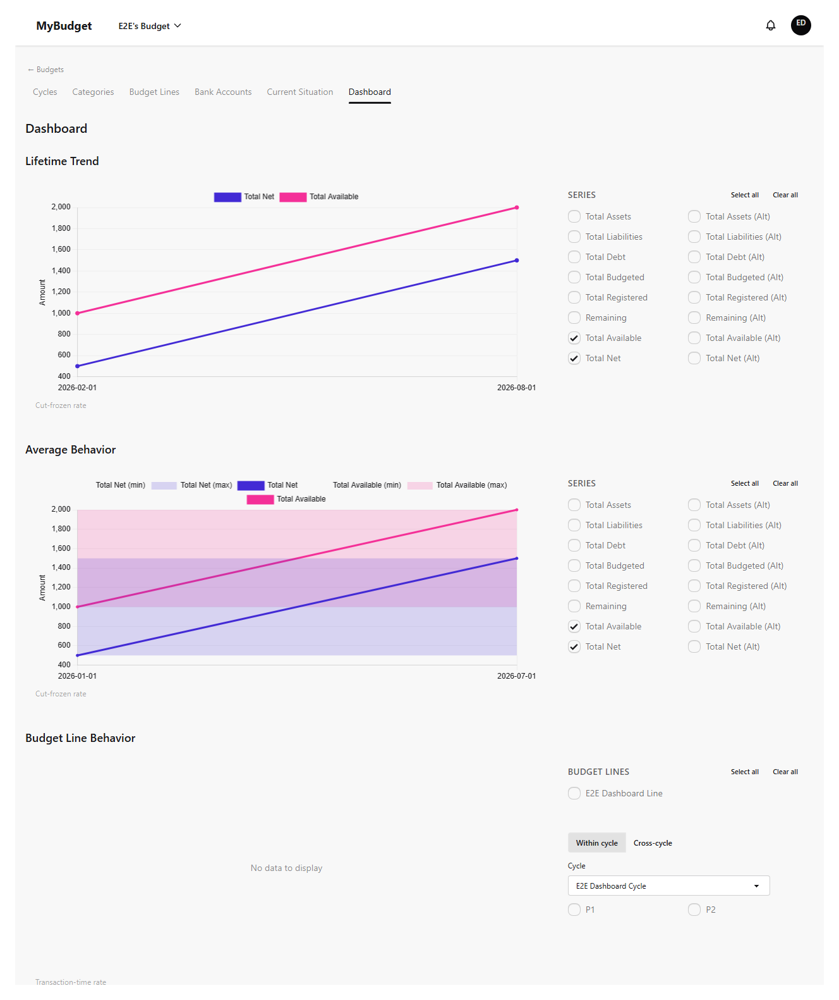
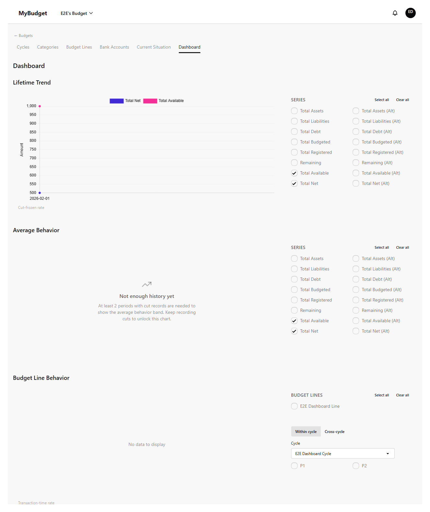
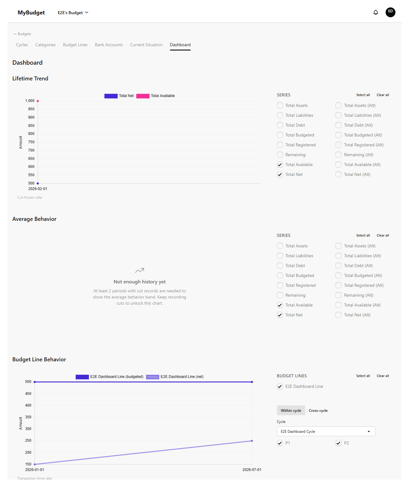
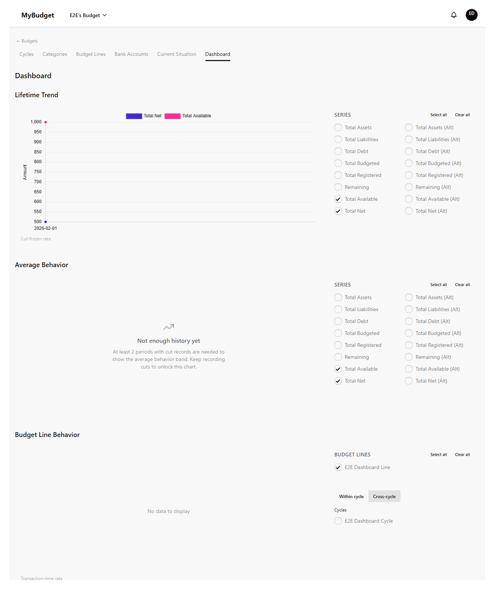
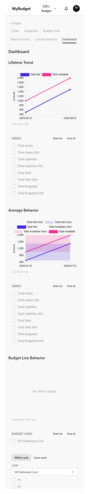

Panel
El panel convierte tus cortes guardados y tu historial de ejecución en gráficos. Tiene tres secciones independientes en una sola página, sin pestañas entre las que cambiar: una tendencia histórica, una banda de comportamiento promedio, y una comparación de líneas presupuestarias con dos modos propios. Este capítulo cubre las tres, además del resguardo de monedas distintas y cómo se adapta el diseño en pantallas angostas.
Tendencia histórica
Esta es la vista por defecto del panel — la que ves primero, antes de cualquier gráfico de promedio o comparación. Grafica cada serie que elijas (Total de Activos, Total de Pasivos, Deuda Total, Total Disponible, Total Neto, y sus contrapartes presupuestadas/registradas) a lo largo de todos los cortes guardados, del más antiguo al más reciente. Un selector al costado te permite elegir o deseleccionar series individuales, o todas a la vez.

Banda de comportamiento promedio
Debajo de la tendencia histórica, el gráfico de comportamiento promedio muestra cómo tiende a moverse cada serie a lo largo de los períodos, en lugar de las fechas de corte crudas. Necesita al menos dos períodos con cortes registrados para tener sentido — con menos, el panel muestra un mensaje explícito de "aún no hay suficiente historial" en lugar de dibujar una banda engañosa a partir de un solo dato.

Comportamiento de líneas presupuestarias — dentro de un ciclo
La tercera sección compara líneas de presupuesto específicas en lugar de los totales a nivel de cuenta de arriba. Elegí una o más líneas del selector, y luego elegí períodos para comparar. En el modo "Dentro del ciclo" primero elegís un Ciclo y después dos o más de sus Períodos; el gráfico permanece vacío hasta que se seleccionen tanto una línea como al menos un período.


Comportamiento de líneas presupuestarias — entre ciclos
Cambiar el modo a "Entre ciclos" reemplaza el selector de períodos de un solo ciclo por una lista de Ciclos — elegí dos o más, y se incluye en la comparación cada período de cada ciclo seleccionado. Cambiar de modo borra lo que estuviera seleccionado en el otro modo, así que una selección de "dentro del ciclo" que quedó sin usar nunca se mezcla en un gráfico entre ciclos, ni viceversa.

Resguardo por monedas distintas
Cada línea que elegís pertenece a un Ciclo, y cada Ciclo tiene una moneda. Si los períodos seleccionados para comparar abarcan ciclos con monedas distintas, el gráfico se niega a renderizarse — en lugar de convertir o mezclar dos monedas silenciosamente en un mismo eje, muestra una advertencia explicando que esas líneas no se pueden comparar juntas. Esto refleja una regla similar en otras partes de la app: monedas distintas nunca se combinan en una sola cifra.
Una sutileza más que vale la pena conocer: la tendencia histórica y el comportamiento promedio convierten los montos en moneda alternativa al tipo de cambio congelado de cada corte, mientras que el gráfico de líneas presupuestarias convierte al tipo de cambio vigente en el momento de cada transacción. Por eso los dos gráficos pueden mostrar totales convertidos ligeramente distintos para los mismos datos subyacentes — esto es esperado, no un error.
Diseño adaptable
En una pantalla angosta, los gráficos y sus selectores laterales se apilan verticalmente en lugar de ir uno al lado del otro, y nada se desborda del ancho de la pantalla.
